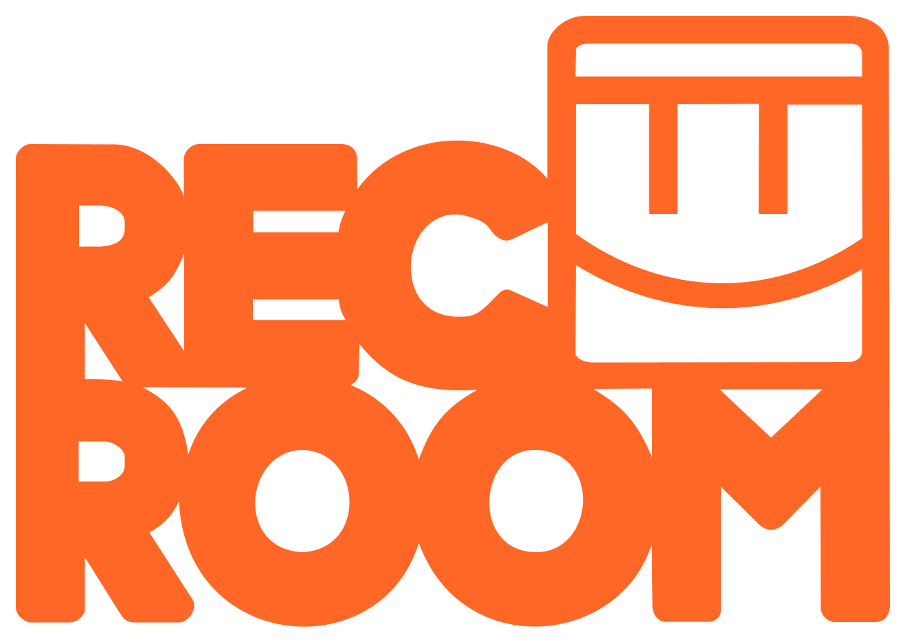

Luna Nobles Webpage Portfolio & Personal Site
This site serves as my personal playground and showcase workshop for all the projects and fun creations I have under my belt!
Throughout my life, I've been creating, making, tinkering, tweaking, and exploring; this webpage showcases many of my projects and prides. I hope your have looking around, be you a potential employer, or a potential friend! On the left (or at the top, for mobile), you can find the navigation pannel that allows you to jump around in the page to look at whatever interests you! On the right (or at the bottom, for mobile), you can find my profile card. The buttons at the top of the profile pannel let you select between my three personas: DeLeDuck, Celene, and IRL — where each pannel is talored to each profile. The centre of the page is reserved for... everything else! Have fun looking around!
Who am I?
I am Luna, Luna Nobles that is. I make things... lots of things; I have fun; and I do eerything I can to put a smile on others' faces. Online, you may know me as "Duck?", or maybe even "Celene", but no matter who you know me as, you most certainly know that I am the world's silliest goofball. In-person, you know me as "that weird trans girl" probably; and I wear that title with PRIDE! In all honesty, I am a creator and a lover. There be no reason to keep all my ideas within my own mind, nor be there any reason to not share the gallons of love in my soul!
I am a computer scientist at heart, but a creative one at that. I have been learning HTML/CSS/JS for five years now, and firmly call myself a web designer and developer. Currently I am transitioning into learning more about game design and development rather than web; I am learning music theory to parallel this. I've spent my whole life around electronic technology, and aim to use my knowlage with it to create art that truly brings people joy! <3
What are the plans for the future of this page?
After all the content is in place and fact-checked, I will be making so many much stuffs! My main idea is ✨ secrets ✨, easter eggs, little nibits to find around the page. Maybe a hidden button that lets you see some cute bonus content; something along those lines. That will NOT be added untill the actual content is done. As I'm writing this, this page is only in version 0.5.1 approximately twelve planned updates before publishing, so we have a long way to go before things like that are added.
Projects
A search-feature with all of the projects I've created — from Video Games to Websites to Systems, here is a collection of everything I've made.
star Featured Projects
DeLeDuck Persona
My previous online persona, containing its own projects, like YouTube videos, music, art, and more!
Unknown Date → May of 2026
Art by @ch1zuno
DeLeDuck Persona
My previous online persona, containing its own projects, like YouTube videos, music, art, and more!
Art by @ch1zuno
YouTube Channels: Primary, Music, ExtrasHere it is. My main online persona. I posted many things under this title, played many games, worked on many projects. Most people know this persona and often call me by it, shorted often to "Duck". But now, it's era comes to an end, as I transition into my new persona, marking a new era of myself online.
It wasn't really about the persona itself, more the many things I worked on and published under the name. My art, my videos, my music, my systems, all of my work leading up to recent has been published unter this name. The art and general connection to the character Ōzora Subaru (the lady in the image holding the duck) came through me just liking her design and sharing her love for ducks! The art featured was made by someone tagged @ch1zuno.
Princess Celene Persona
This is my current major project, showcasing a new online persona, games, and more.
May of 26 → Present
Created with this Picrew
Princess Celene Persona
This is my current major project, showcasing a new online persona, games, and more.
Art created with this Picrew
Alrighty! This is the big one; this is the project that will encompass all of my work for the foreseeable future, giving all my work a name to atatch it to!
Princess Celene as a character is the Princess of the Moon; her main colour pallet consists of many purples and accenting yellows (not to disimular form my personal pallet); she can often be depicted wearing royal gowns and flowy dresses. She will have lore assosiated with her character, and, when making videos, I will have to stay in character (although I don't plan on imposing too many restrictions on the character that do not match my own natural personality).
One of, if not, the most important project under this character will be the Princess Celene website, currently at princess-celene.github.io. I plan to have a centralised website that can support things like a front and centre live chatbox, hosting for all of my videos, and a hundered fun activities to play with! I want to have a limited social media presence, and will likely only maintain a YouTube channel (@Princess_Celene) featuring things like my coding projects, gaming adventures, and creative projects. But, importantly, some content will be locked to my own website, encouraging people to join it. I want to have my full personality on my website, and a public snippet of it on YouTube.
Visceria Webpage
The webpage for Gaming Thing Studios' Itch.io game Visceria.
April of 26
Art by Pari T
Viceria Webpage
The webpage for Gaming Thing Studios' Itch.io game Visceria.
Art by Pari T.
In April of 2026, I designed and developed (in coordination with the Gaming Thing Studio team behind the game), the webpage for Visceria. Visceria itself is an Itch.io game featuring a lost alien girl wandering a semi-populated planet to find tools to repair her ship. While I had no part in the development of the game, I did solely create the webpage.
At visceria.github.io, you can find the webpage I created, designed, and published in coordination with the Gamig Thing Studio team. The site features a Itch.io embed to play the game directly from the site! It also includes an "About the Creators" section, detailing the faces and roles of the team, as well as a "Lore" section, with in-game and meta-game lore snippets.
Nowadays, the site sits up and running, but left to the team themselves to update. I was retired shortly after the site and game's publication, therein leaving any updates to the Gaming Thing Studios team. I stick around as advisory now...
This project was super fun to work on, not only more practice and training for my web design and development skills, but as a great experience in working with others to get the site taylored to their wants. I loved working with the team to create an awesome website, and I thuroughly enjoyed the game itself! Thank you to the Gaming Thing Studio team for letting me be a part of it for my little piece.
book_5 All Projects
GameMaker Games
A small collection of games made in an old version of GameMaker.
Febuary of 26
GameMaker Games
A small collection of games made in an old version of GameMaker.
Back in Febuary of 2026, I spent a few months working with GameMaker, an old version of GameMaker, making a few basic games and learning basic game development. One of the more pivital games I had created was a fully functioning Pacman clone. I also made a two player tanks game (not too disimular from Wii Tanks), a maze escape game, and, of course, Pong.
Unfortuantely, due to loss of access to the harddrive I kept these games on, I cannot show them to you! 😭
Making these games served as a great intro to basic game development, learning how to predict and understand player behaviour, and some animation and pixle art skills! I had a great time checking out GameMaker, and would love to dive back into it again on my own time... Hopefully getting my hands on a slightly more up-to-date version...
Artonia Portfolio
On Artsonia, you can find all of the physical art I have made throughout the years.
~
Artsonia Portfolio
On Artsonia, you can find all of the physical art I have made throughout the years.
Throughout my years, I have made some amazing art, some things I am really proud of. This Artsonia portfolio showcases some of these peices. I recognise that not all of my art has been uploaded to Artsonia; I have a lot missing. But these are some of the piece I do have on there.
But I do have a few grievances with Artsonia. Moving forward, since Artsonia seems to be a platform mainly made for schools and educational art programs, as well as how limited it's uploading capabilities are, I will be finding some other platform to publish my work on. Maybe just here! Perhaps a /art page. Or perhaps I simply move to some other known platform like DeviantArt or something. 😄
Sylia Kon
A Dungeons & Dragons character I have written that I am very proud of.
June of 2026 → Present
Syllia Kon
A Dungeons & Dragons character I have written that I am very proud of.
Art created with this Picrew.
Starting around late June of 2026, I started creating and writing the Dungeons & Dragons character Syllia Kon. I love writing, and I really enjoy the help of building a character within a pre-defined universe! The ability to both push the limits and contrict to the rules is something that really helps me find a grove when writing. Intertwining the characteristics of the actual world of D&D into my own creation made it both easier to expand the character and more fun to work on in the first place, with the added excitement of being able to then play/act as the character at the table!
A basic overview of her story goes as follows: growing up in a smaller town, one of particular bigotry towards her species, Syllia ran away from home to "the big city". Struggling to pay for basics like food and shelter, she is forced to join the local crime empire to scrape by. During the first mission with the organisation, she witnesses her recruiter loose their arm in combat! In a panic, she grabs his rapier and displays particular talent in the weapon, going on to hone that skill for about another year with the organisation. She was respected by the lower ranks of the organisation, but ended up leaving for another city, finding the life of crime not suit for her. She ends up joining the city's paladins' guild, maybe as apology for her previous crimes, maybe as a way to help others in a way she never got growing up.
Wishlist
My personal wishlist page, with everything I'd like consolidated into one page.
October of 2026 → Present
Wishlist
My personal wishlist page, with everything I'd like consolidated into one page.
I was particularly annoyed and kerfuffled by the disorganisation of managing and distributing multiple wishlists and wants across diffeerent platforms, so I made this. At /wishlist, I have my entire current wishlist, with links, descriptions, and pretty pretty looks and animations! This project isn't particularly difficuly, but I do enjoy training my HTML/CSS/JS skills by creating this project!
I am particularly pround of the "Secret Code" feature! Visitors to the site can enter a secret code that changes what wishlisted items apear to them. By default, the 'Public' type items are viewable, but entering the secret code may make 'Friends & Family' type items viewable! There is also a great system so that certain 'Public' type items are STILL viewable when the 'Friends & Family' mode is activated!
DeLeDuck Persona
My previous online persona, containing its own projects, like YouTube videos, music, art, and more!
Unknown Date → May of 2026
DeLeDuck Persona
My previous online persona, containing its own projects, like YouTube videos, music, art, and more!
Unknown Date → May of 2026
DeLeDuck Persona
My previous online persona, containing its own projects, like YouTube videos, music, art, and more!
Unknown Date → May of 2026
DeLeDuck Persona
My previous online persona, containing its own projects, like YouTube videos, music, art, and more!
Unknown Date → May of 2026
DeLeDuck Persona
My previous online persona, containing its own projects, like YouTube videos, music, art, and more!
Unknown Date → May of 2026
DeLeDuck Persona
My previous online persona, containing its own projects, like YouTube videos, music, art, and more!
Unknown Date → May of 2026
DeLeDuck Persona
My previous online persona, containing its own projects, like YouTube videos, music, art, and more!
Unknown Date → May of 2026
DeLeDuck Persona
My previous online persona, containing its own projects, like YouTube videos, music, art, and more!
Unknown Date → May of 2026
Skills
A sort of resume, making note of my skills and cerifications in many... many fields.
blah blah blah
About Me
All the things you may want to know about me, the person, my likes, my interests, all the fun stuff.
blah blah blah



Contacts & Socials
Although limited in number, here are my social media presences and contacts.
Youtube Accounts for DeLeDuck
I didn't post much, really at all. I have some unlisted videos on the main account, but the only real content is available on the Music account. Is the music good? .....No comment....
I probably wont be posting anymore on these accounts, as they belong to the DeLeDuck persona, and I am moving towards the Princess Celene persona now.
Youtube for Princess Celene
Right, so this account will likely be the place I post my things nowadays.
I'll be trying to post more, some gameplay, some coding, some ✨ lore ✨! Do check it whenever you have time, and, if you're actually crazy, subscribe? :)
Email!
If you need to talk to me directly, this is the best place to find me, generally. Shoot me an email if you just wanna chat, are interested in my work, or just have a question or two!
Resume
Various versions of the resumes under my name.
blah blah blah